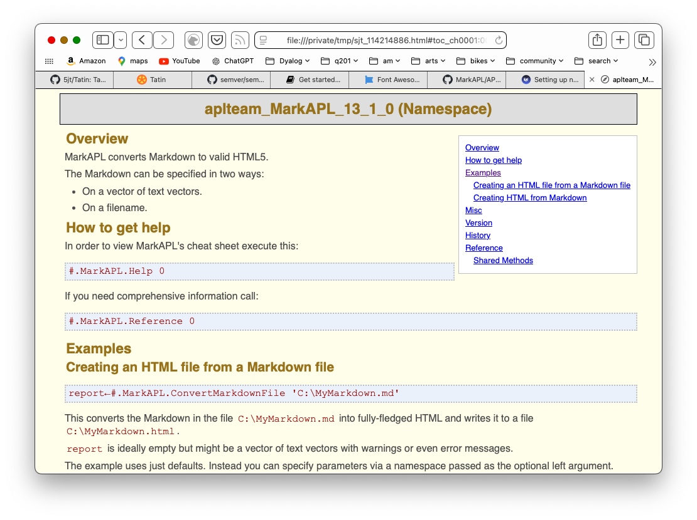

Get started with Tatin
Install, load and use a Tatin package
Install
Tatin is already installed. Activate it.
]Activate Tatin
See Older Versions.
Look for registries
Initially Tatin knows only the principal and test Tatin registries.
]TATIN.ListRegistries
Alias URL ID
---------- ----------------------- -------
tatin https://tatin.dev/ 29fbeb2 ...
tatin-test https://test.tatin.dev/ 2a28231 ...
When you want to start using other Tatin registries, remote or on your local machine, edit the user settings.
Look for packages
List all the packages on the principal registry.
]TATIN.ListPackages
Registry: https://tatin.dev ≢ 60
Group & Name # major versions
------------ ----------------
abrudz-sort 1
aplteam-ADOC 1
aplteam-APLGit2 1
aplteam-APLGUI 1
aplteam-APLProcess 1
...
You can restrict the listing to a single group.
]TATIN.ListPackages -group=davin
Packages are tagged.
]TATIN.ListTags
All tags from https://tatin.dev
-------------------------------
data
grid
import
page
read
...
]TATIN.ListPackages -tag=markdown
Registry: https://tatin.dev ≢ 4
Group & Name # major versions
------------ ----------------
aplteam-Laguntza 2
aplteam-MarkAPL 3
Install packages
Suppose you want to use the MarkAPL package in an application you are developing, which we will call a project.
Suppose the project lives in /Foo.
Install the package as part of the Foo project.
]TATIN.InstallPackages MarkAPL /Foo/packages
Sure you want to create and install into
/Foo/packages ? (Y/n) Y
Installed into /Foo/packages:
aplteam-MarkAPL-13.1.0
In order to load all dependecies (including newly installed ones) into the WS execute:
]TATIN.LoadDependencies "/Foo/packages"
MarkAPL specifies neither group nor version number.
The name is unique on the principal registry; the latest version is installed by default.
The /Foo/packages folder has been created and contains:
apl-buildlist.json
apl-dependencies.txt
aplteam-APLTreeUtils2-1.4.0
aplteam-CommTools-1.8.1
aplteam-FilesAndDirs-5.8.0
aplteam-MarkAPL-13.1.0
aplteam-OS-3.1.1
(You might see different version numbers.)
Load packages
MarkAPL has been installed in the project. Now load it into the active workspace.
MarkAPL is one (the only one) of the dependencies of Foo.
]tatin.LoadDependencies /Foo/packages #.Foo
#._tatin.aplteam_MarkAPL_11_0_1
Tatin is taciturn
Tatin works quietly by default.
Use the -verbose flag if you need to see more of what is going on when packages are loaded.
Documentation
We now have #.Foo.MarkAPL loaded – but how do we use it?
The ADoc convention lets Tatin packages include their own documentation.
]ADoc #.Foo.MarkAPL
]Open /private/tmp/sjt_114214886.html
Watch your browser
]Open user command pops a browser window.
]Open /private/tmp/sjt_114214886.html

Test
Test an example from the documentation.
MyMarkdown←'# MarkAPL' 'All about **_MarkAPL_**'
(html ns)←#.Foo.MarkAPL.Markdown2HTML MyMarkdown
↑html
<div class="h_tag">
<a href="#markapl" id="markapl" class="autoheader_anchor">
<h1 data-id="MarkAPL">MarkAPL</h1>
</a>
</div>
<p>All about <strong><em>MarkAPL</em></strong></p>
ns
#._tatin.aplteam_MarkAPL_13_1_0.[Namespace]
Cider depends on Tatin
If you use Cider:
- Deactivate and remove it before Tatin
- Re/Install Tatin before Cider.
Deactivate
To remove Tatin and/or Cider from the installation folder:
]Deactivate [all|cider|tatin] [-versionagnostic]